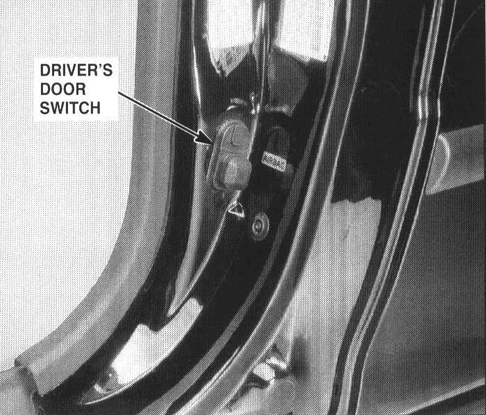

Operation CHARM
: Car repair manuals for everyone.
Home
>>
Acura
>>
1995
>>
Integra (RS, LS) L4-1834cc 1.8L DOHC PFI
>>
Repair and Diagnosis
>>
Lighting and Horns
>>
Sensors and Switches - Lighting and Horns
>>
Door Switch
>>
Locations
>>
Driver's Door Switch
>>
Photo 87
Photo 87
87. Front of Left Quarter Panel (Right Sim.) (Hatchback):

Front Of Left Quarter Panel (Right Similar)